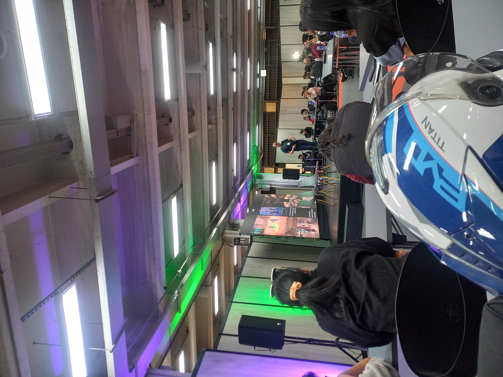
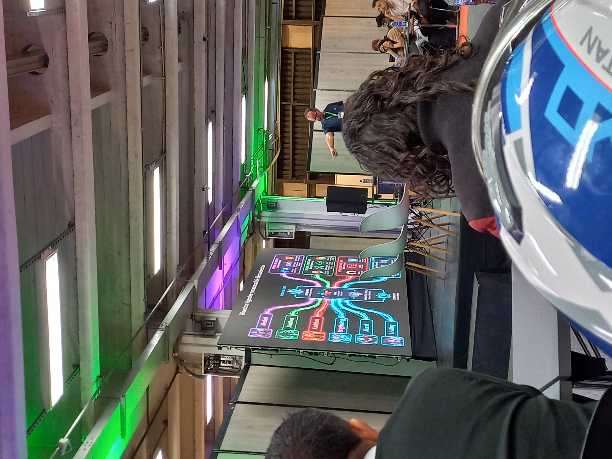
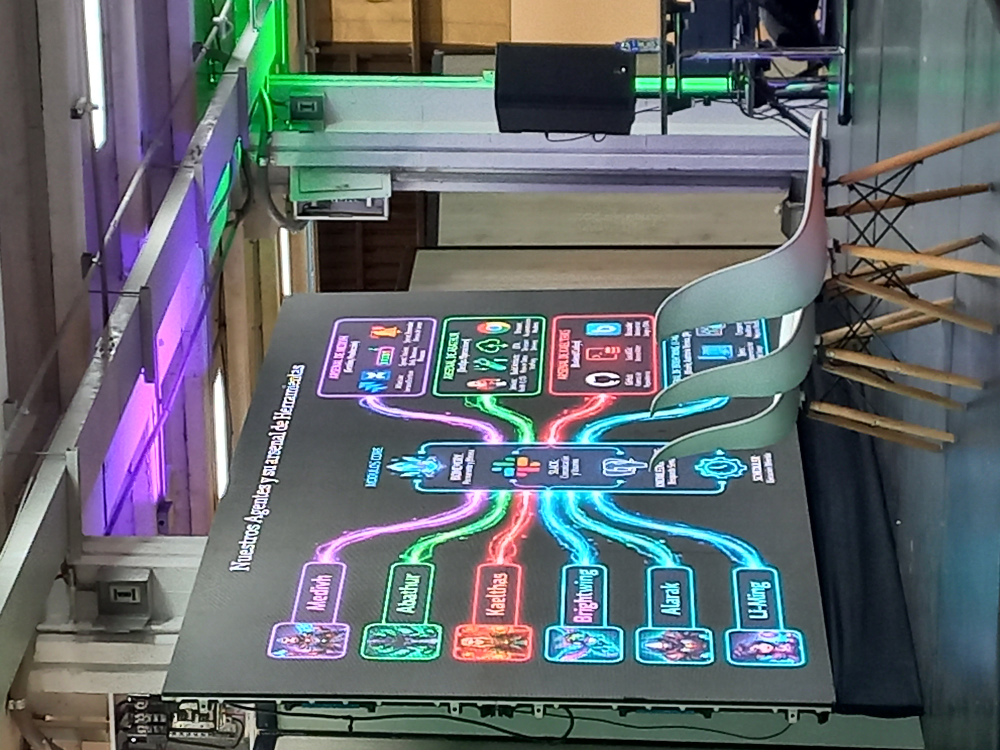
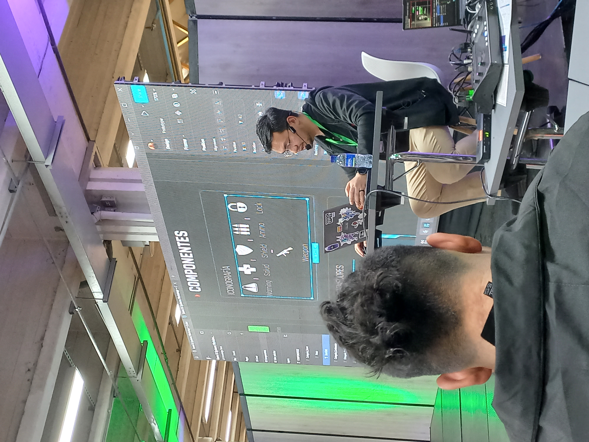
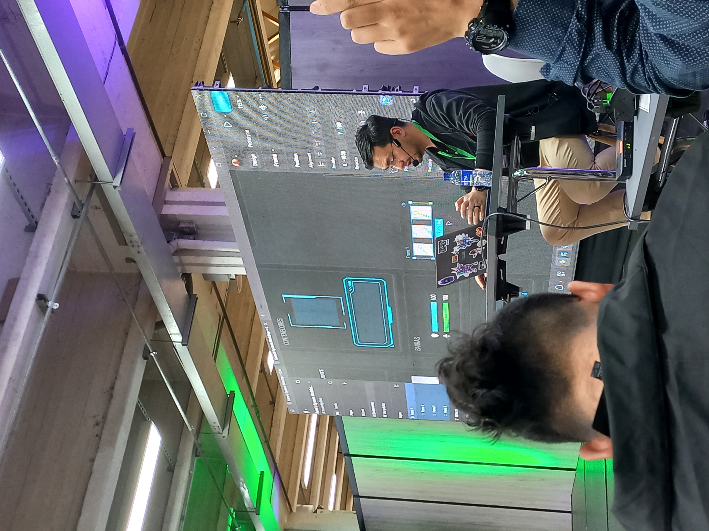
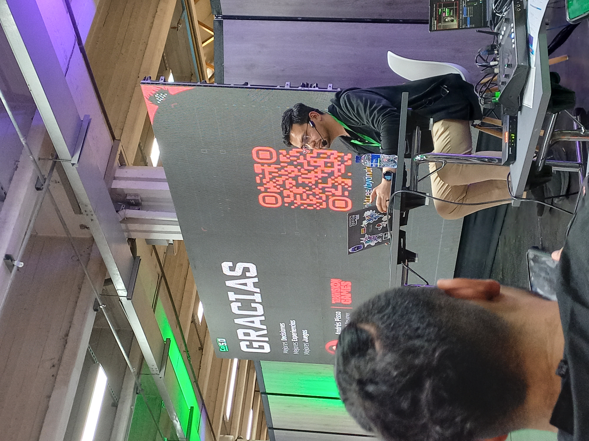

Bienvenidos a la Plataforma Informativa
Como aprendiz de la tecnología en Análisis y Desarrollo de Software (ADSO) en el Centro de Manufactura Textil y Cuero, he construido este espacio web con el fin de consolidar y exponer los conocimientos más críticos que absorbimos durante el evento Colombia 5.0. La transformación digital ya no es un concepto del futuro; la tenemos encima y está cambiando la manera en la que tiramos líneas de código, estructuramos bases de datos y diseñamos soluciones interactivas para el mercado real.
Objetivo del Sitio
Este sitio web tiene el propósito de documentar de forma técnica y reflexiva el impacto de la inteligencia artificial y el diseño de experiencia de usuario en la industria del software. A través de este recorrido, pongo bajo la lupa los conceptos clave del evento, traduciendo el conocimiento técnico a un enfoque bilingüe y evaluando críticamente las implicaciones éticas a las que nos enfrentaremos al salir a nuestra etapa productiva en las empresas.
Implementación y Automatización de IA para la Producción de Videojuegos de Talla Mundial
Speaker: Alejandro González (CEO de Bacon Games)
Eje Central: Evolución de Bacon Games, hitos de desarrollo como FIFA Rivals y optimización de pipelines usando agentes lógicos de IA.
FIFA Rivals, Automation, AI Agents, Scalability, Dev Workspaces
Resumen y Escrito Reflexivo
Esta charla me pareció brutal porque Alejandro González nos mostró la realidad detrás de bambalinas en estudios grandes, hablando de juegos memorables que han sacado al mercado, especialmente FIFA Rivals. Lo que me dejó pensando como programador fue ver cómo la IA ya no es solo una herramienta para hacer consultas rápidas, sino que están montando agentes autónomos de IA integrados directamente en sus entornos de desarrollo. Explicaba que automatizar los procesos de empaquetado, pruebas de unidad y rastreo de capas dañadas les quita de encima un montón de trabajo pesado y repetitivo. Al final del día, esto no desplaza al desarrollador, sino que eleva la barra: el valor agregado del equipo humano se enfoca en la lógica compleja, optimización del backend y mecánicas de juego innovadoras. Entendí que si queremos crear software competitivo desde Colombia, la escalabilidad depende de qué tan bien sepamos orquestar estas herramientas inteligentes dentro de nuestros repositorios de código.
Galería de Evidencias (Registro Multimedia)

AI System Dev Log Pipeline Automation
Pipeline Automation
Bacon Games Keynote
FIFA Rivals Backend Overview Scalability Architecture
Scalability ArchitectureReferencias de la Sección
- González, A. (2026). Implementación y Automatización de IA para la Producción de Videojuegos de Talla Mundial. Conferencia en Evento Colombia 5.0, Bogotá.
- Glosario Técnico de Referencia Interna ADSO - Ficha 3227025.
- Traducciones validadas mediante herramientas de consulta lingüística (Google Traductor & Gemini AI, Junio 2026).
Game UI Systems: De Pantallas Bonitas a Interfaces que Funcionan
Speaker: Andrés Felipe Pisso Tobar (Lead UX Designer de Teravision Games)
Eje Central: Diseño e implementación de interfaces interactivas funcionales en Figma y motores de juego, mitigando el caos visual.
Figma Layouts, Auto Layout, Component Structure, Visual Hierarchy, User Experience
Resumen y Escrito Reflexivo
En este taller práctico la dinámica cambió por completo y nos metimos de lleno al diseño de interfaces de usuario. Andrés Pisso tocó una gran verdad: muchas veces los desarrolladores nos centramos en que algo se vea 'bonito' o llamativo, pero terminamos creando pantallas caóticas que confunden al usuario. Durante el taller trabajamos directamente estructurando maquetas en Figma. Nos mostró cómo usar herramientas clave como Auto Layout, organizar la jerarquía de texto y manejar de forma estricta los espaciados mediante contenedores limpios. Esto me hizo entender que diseñar para videojuegos o para aplicaciones multiplataforma requiere pensar en componentes reutilizables y escalables, casi igual a como modularizamos el código en programación. Si la iconografía, los elementos vectoriales y los assets visuales no están perfectamente alineados bajo criterios de diseño responsive y accesibilidad, la interfaz se rompe en pantallas con resoluciones altas o dispositivos móviles. Al final, una interfaz exitosa es la que guía al jugador de forma intuitiva sin que note que hay un sistema complejo corriendo por detrás en motores como Unity.
Galería de Evidencias (Registro Multimedia)
 Figma Workspace Setup
Figma Workspace Setup Auto Layout Component Testing
Auto Layout Component Testing
Teravision Games Live Workshop
UI Element Hierarchy Definition
Responsive Framework GridReferencias de la Sección
- Pisso Tobar, A. F. (2026). Game UI Systems: de pantallas bonitas a interfaces que funcionan. Taller práctico en Evento Colombia 5.0, Bogotá.
- Documentación oficial de Figma Layout Systems (2026).
- Traducciones técnicas e interpretaciones revisadas con soporte de Google Traductor y Gemini AI para consistencia semántica.
Glosario Técnico Bilingüe (30 Términos)
Listado de términos especializados consolidados durante las sesiones del evento, enfocados en diseño de sistemas e ingeniería de software.
| Term (English) | Término (Español) | Definición Técnica |
|---|---|---|
| Emerging Technologies | Tecnologías emergentes | Innovaciones tecnológicas disruptivas que se encuentran en fase de desarrollo o adopción primaria en el mercado. |
| Artificial Intelligence (AI) | Inteligencia Artificial | Sistemas algorítmicos capaces de emular procesos lógicos, análisis de datos y toma de decisiones humanas. |
| Scalability | Escalabilidad | Capacidad de una arquitectura de software para soportar un incremento sustancial de carga de datos sin degradar su rendimiento. |
| Process Automation | Automatización de procesos | Sustitución de tareas operativas y repetitivas manuales mediante la ejecución automática de scripts o software programado. |
| Added Value | Valor agregado | Característica adicional y diferencial incorporada a un desarrollo que supera las expectativas básicas del cliente. |
| Libraries | Librerías | Conjunto de archivos de código precompilado que los desarrolladores invocan para reutilizar funciones específicas. |
| UI Design | Diseño de interfaces | Planificación visual y maquetación gráfica de los elementos de interacción digital con los que interactúa el usuario. |
| Player Modeling | Modelado de jugadores | Representación digital matemática o matemática de los perfiles, comportamientos y patrones de un usuario en un juego. |
| Patches | Parches | Modificaciones directas al código de producción destinadas a solucionar bugs críticos o vulnerabilidades de seguridad. |
| AI Agent | Agente de IA | Entidad de software autónoma que percibe un entorno de desarrollo y ejecuta acciones lógicas para resolver un problema. |
| Repository | Repositorio | Espacio de almacenamiento centralizado gestionado por sistemas de control de versiones para guardar el código fuente. |
| Workspaces | Espacios de trabajo | Configuraciones lógicas de directorios y herramientas agrupadas dentro de un IDE para un desarrollo específico. |
| Long-Term Memory | Memoria de largo término | Capacidad de un modelo persistente para retener estados y datos históricos contextuales a través de múltiples sesiones. |
| Short-Term Memory | Memoria de corto término | Área de almacenamiento de datos temporales volátiles utilizados para operaciones de procesamiento inmediato. |
| Development Environment | Entorno de desarrollo | Ecosistema integrado por editores, compiladores y servidores locales donde el programador escribe y prueba software. |
| Corrupted Layers | Capas dañadas | Segmentos lógicos de arquitectura o archivos de recursos que han perdido su integridad estructural y generan excepciones. |
| Unit Testing | Pruebas de unidad | Bloques de código diseñados para aislar y validar el correcto funcionamiento de una función o método individual. |
| Robust Documentation | Documentación robusta | Conjunto exhaustivo de manuales, diagramas UML y especificaciones que detallan por completo la arquitectura de un sistema. |
| Specifications (Specs) | Especificaciones | Documentos restrictivos que detallan los requisitos funcionales y técnicos mínimos que el software debe cumplir obligatoriamente. |
| Variables | Variables | Espacios reservados de memoria RAM identificados con un nombre, destinados a almacenar un valor mutable durante la ejecución. |
| Backend | Backend | Capa de lógica del servidor, gestión de API y manipulación de bases de datos que no es visible de forma directa por el usuario. |
| Quality Assurance (QA) | Aseguramiento de calidad | Metodología sistemática de auditoría técnica aplicada al software para detectar fallos y certificar que cumple los estándares. |
| Deployment | Despliegue | Fase del ciclo de vida del software donde el sistema compilado se transfiere a un servidor de producción para su uso público. |
| Figma | Figma | Herramienta colaborativa de prototipado web y diseño de interfaces basada en la nube con soporte vectorial. |
| Spacing | Espaciado | Manejo intencional de márgenes y paddings entre componentes gráficos para garantizar legibilidad y balance visual. |
| Typography | Tipografía | Familia tipográfica y reglas de estilo aplicadas al texto para optimizar la lectura dentro de una interfaz digital. |
| Text Hierarchy | Jerarquía de texto | Uso de diferentes tamaños, pesos y contrastes en las fuentes para guiar el ojo del usuario hacia lo más importante. |
| Containers | Contenedores | Estructuras visuales lógicas que delimitan el espacio físico ocupado por un grupo de elementos relacionados. |
| Components | Componentes | Elementos de software o diseño modulares que se encapsulan para ser reutilizados múltiples veces en el proyecto. |
| Iconography | Iconografía | Conjunto de representaciones simbólicas e íconos vectoriales normalizados que asisten la navegación intuitiva. |
Fuentes y Referencias del Glosario
Este glosario técnico fue consolidado con base en las notas de campo del evento Colombia 5.0, contrastado con la documentación técnica de MDN Web Docs, los lineamientos oficiales de Figma y traducido conceptualmente con el apoyo técnico de Google Traductor y Gemini AI para asegurar la precisión terminológica requerida en los entornos de desarrollo ADSO.
La Ética en la Tecnología Empresarial: Una Mirada desde el Desarrollo de Software
A ver, como aprendiz de ADSO que está a punto de salir a afrontar proyectos reales en las empresas, la conclusión obligatoria que me deja este evento es que tirar código no es solo hacer que las cosas funcionen. Con la llegada en firme de la automatización avanzada y la Inteligencia Artificial, la ética profesional ya no es una carreta teórica que nos dan por cumplir; es una barrera de responsabilidad técnica diaria.
Cuando hablamos de la implementación de IA y agentes autónomos, la automatización mal enfocada puede destruir puestos de trabajo de forma masiva o perpetuar sesgos horribles si los datos con los que entrenamos los modelos están viciados. El uso responsable de datos es clave: como futuros desarrolladores pasaremos por nuestras manos bases de datos enteras con información sensible de usuarios reales. Si por pereza o por presiones de tiempo en la empresa ignoramos las pruebas de unidad, las validaciones de seguridad del backend o dejamos capas dañadas expuestas, estamos poniendo en riesgo la privacidad de la gente. El impacto social es directo. Automatizar procesos para hacer que una empresa sea más competitiva es excelente, pero el límite está en no deshumanizar el entorno ni comprometer la integridad técnica.
Mi compromiso como desarrollador formado en el SENA es entender que cada patch, cada despliegue en un repositorio y cada arquitectura que diseñemos lleva nuestro sello de responsabilidad. La tecnología debe ser un motor de inclusión y eficiencia, y nosotros somos los primeros guardianes que debemos decir 'no' cuando un desarrollo vulnere los derechos o la transparencia de los usuarios.
Referencias de Consulta Ética
- Memorias del Debate General sobre Ética Empresarial e IA — Colombia 5.0 (2026).
- Estructuras de validación semántica generadas mediante consultas cruzadas en Gemini AI y herramientas de traducción automatizada (Google Translate).
- Código de ética profesional para la ingeniería de software y desarrollo de sistemas informáticos.